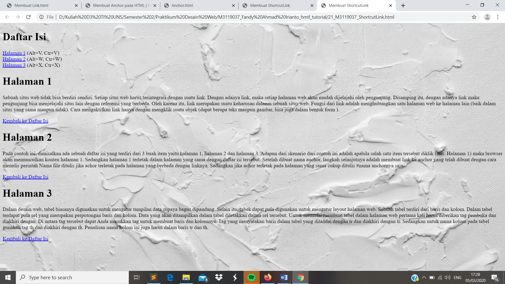

Membuat Anchor
//Perintah ShortcutLink digunakan apabila kita ingin membuka link tanpa menggunakan mouse. Hal ini dapat dilakukan dengan beberapa cara yakni dengan (Alt+V, Ctr+V)
(Alt+W, Ctr+W)(Alt+X, Ctr+X)
Codingan
<!DOCTYPE html>
<html>
<head>
<meta charset="UTF-8">
<title>ShortcutLink </title>
</head>
<body style ="background:url(background.jpg); background-repeat: no-repeat; background-size: cover;">
<h1>
<a name="daftar"> Daftar Isi</a>
</h1>
<p>
<a href="#hal1" accesskey="v">Halaman 1</a> (Alt+V, Ctr+V)<br />
<a href="#hal2" accesskey="w">Halaman 2</a> (Alt+W, Ctr+W)<br />
<a href="#hal3" accesskey="x">Halaman 3</a> (Alt+X, Ctr+X)<br />
</p>
<h1>
<a name ="hal1"> Halaman 1 </a>
</h1>
<p>
Sebuah situs web tidak bisa berdiri sendiri. Setiap situs web harus terintegrasi dengan suatu Disamping itu, dengan adanya link maka pengunjung bisa menjelajahi situs lain dengan referensi yang berbeda. Oleh karena itu, link merupakan suatu keharusan dalanm sebuah situs web. Fungsi dari link adalah menghubungkan satu halaman web ke halaman lain (baik dalam situs yang sama maupun tidak). Cara mengaktifkan link hanya dengan mengklik suatu objek (dapat berupa teks maupun gambar, bisa juga dalam bentuk form ).
</p>
<p>
<a href="#daftar"> Kembali ke Daftar Isi</a>
</p>
<h1>
<a nama="hal2">Halaman 2 </a>
</h1>
<br>
<p>
Pada contoh ini, dimisalkan ada sebuah daftar isi yang terdiri dari 3 buah item yaitu halaman 1, halaman 2 dan halaman 3. Adapun dari skenario dari contoh ini adalah apabila salah satu item tersebut diklik (mis. Halaman 1) maka browser akan memunculkan konten halaman 1. Sedangkan halaman 1 terletak dalam halaman yang sama dengan daftar isi tersebut. Setelah dibuat nama anchor, langkah selanjutnya adalah membuat link ke anchor yang telah dibuat dengan cara menulis perintah Nama file ditulis jika achor terletak pada halaman yang berbeda dengan linknya. Sedangkan jika achor terletak pada halaman yang sama cukup ditulis #nama anchornya saja.
</p>
</br>
<p>
<a href="#daftar"> Kembali ke Daftar Isi</a>
</p>
<h1>
<a name="hal3">Halaman 3</a>
</h1>
<br>
<p>
Dalam desain web, tabel biasanya digunakan untuk mengatur tampilan data supaya bagus dipandang. Selain itu, tabek dapat pula digunakan untuk mengatur layout halaman web. Sebuah tabel terdiri dari baris dan kolom. Dalam tabel terdapat pula sel yang merupakan perpotongan baris dan kolom. Data yang akan ditampilkan dalam tabel diletakkan dalam sel tersebut. Untuk memulai membuat tabel dalam halaman web pertama kali harus diberikan tag pembuka dan diakhiri dengan. Di antara tag tersebut dapat Anda masukkan tag untuk membuat baris dan kolomnya. Tag yang menyatakan baris dalam tabel yang ditandai dengan tr dan diakhiri dengan tr. Sedangkan untuk nama kolom pada tabel gunakan tag th dan diakhiri dengan th. Penulisan nama kolom ini juga harus dalam baris tr dan th.
</p>
</br>
<p>
<a href="#daftar">Kembali ke Daftar Isi</a>
</p>
</p>
</body>
</html>
Tampilan Hasil Percobaan

Kesimpulan
Pada percobaan Anchor ini kita dapat meletakkan link yang nantinya akan mengarah baik itu kedalam daftar isi ataupun kebaris yang dituju dengan menggunakan <a>.